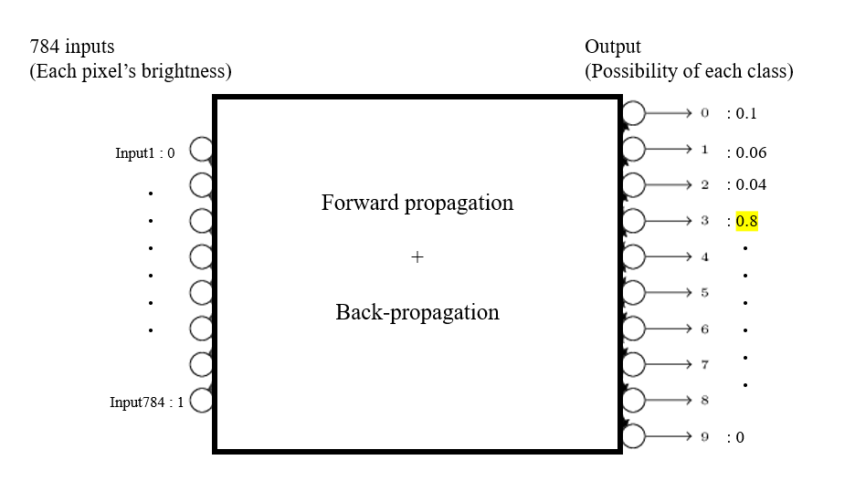

Yeji Park
Character Recognition
(using Artificial Neural Network)
0. Problem description
According to given picture which contains one written number among 0 to 9, It will recognize the number from the picture.
Ex) This picture below is the size of 28*28, has 784 pixels. Each pixel contains information of location and the brightness.
combining those two information, Neural network will learn by forward, back-propagation and figure out what number it is.

1. Forward propagation
2. Back-propagation